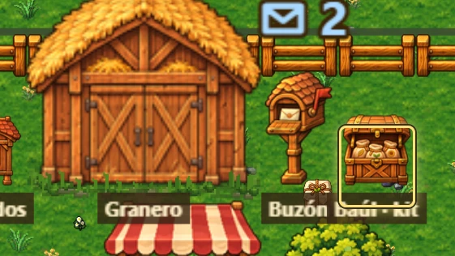
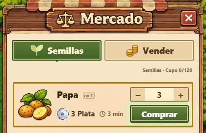
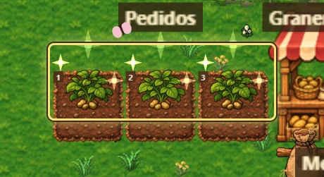
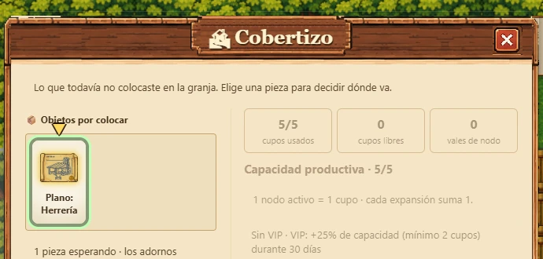

Guía para principiantes
Empezá acá
Entrá con tu correo, hacé tu primera cosecha y prepará tu granja para explorar el bosque.
Ver primeros pasos


Tu primera cosecha
-
Abrí el baúl de bienvenida
Está junto al Granero y trae hachas, picos y una Bolsa para salir a la Zona Negra. En PC, usá Mostrar destino en el objetivo de arriba si no lo encontrás.

Buscá el Baúl · kit al lado del Granero. -
Comprá tres semillas de papa
Andá al Mercado → Semillas. Cada semilla de papa cuesta 1 Plata. Seleccioná las semillas en la barra rápida y plantá una en cada parcela.

En Semillas, elegí 3 semillas de papa y pulsá Comprar. -
Cosechá y vendé las papas
Cuando estén listas, tocá las plantas para cosechar. Si la guía te marca una parcela vacía, practicá cómo pausarla y reactivarla en el Cobertizo. Vendé las papas en Mercado → Vender y reservá Plata para volver a sembrar.

Tocá las plantas con destellos para cosechar. -
Construí la Herrería
Seguí el objetivo superior. En Menú → Cobertizo, elegí el plano, colocalo en la granja y llevá los materiales a la obra.

En Objetos por colocar, elegí Plano: Herrería.